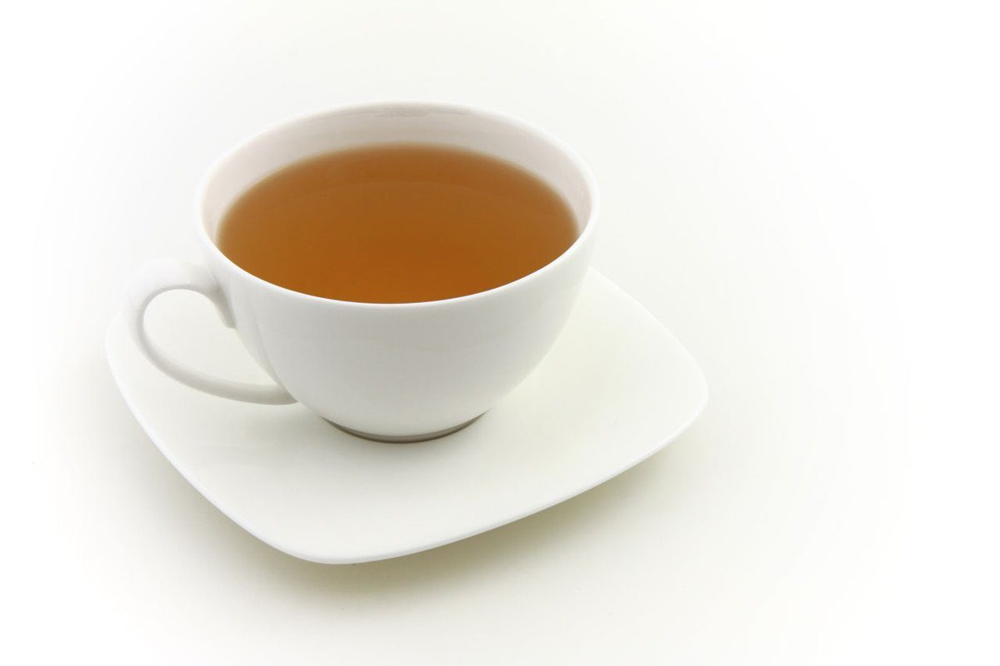
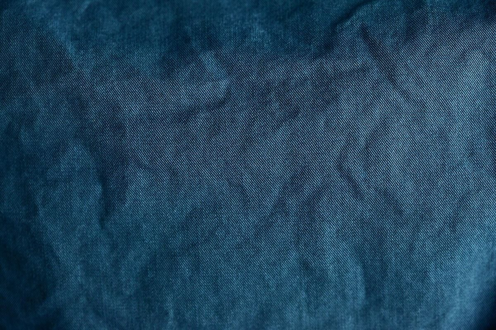

カフェ / 石川県白山市
古鶴堂
石川県白山市にあるカフェ「古鶴堂(こつるどう)」のご案内ページです。営業時間やメニューなど、詳しいことは準備中。まずはInstagramをのぞいてみてください。

制作側の連想
屋号の「鶴」から、五回の折り目へ
お店の名前の由来は分かりません。制作側は屋号の「鶴」の字から折り鶴を連想し、正方形の紙を五回折って鶴の形にする「折り図」の見立てで、このサイトの五ページを並べました。お店の理念・由来とは無関係の、制作側の連想です。
紙のかわりに
静かな色の写真を数枚
写真は白山市の風景でもお店のものでもありません。落ち着いた色合いで選んだ、国外・撮影地不明のフリー素材です。



ご案内
お店のこと(確認できたものだけ)
| 所在地 | 〒929-0217 石川県白山市湊町ヨ-36 |
|---|---|
| 電話 | なし |
| 営業時間 | 準備中 |
| 定休日 | 準備中 |
| ご予約 | 準備中 |
| 駐車場 | 準備中 |
| SNS | Instagram @kotsurudou1018 |